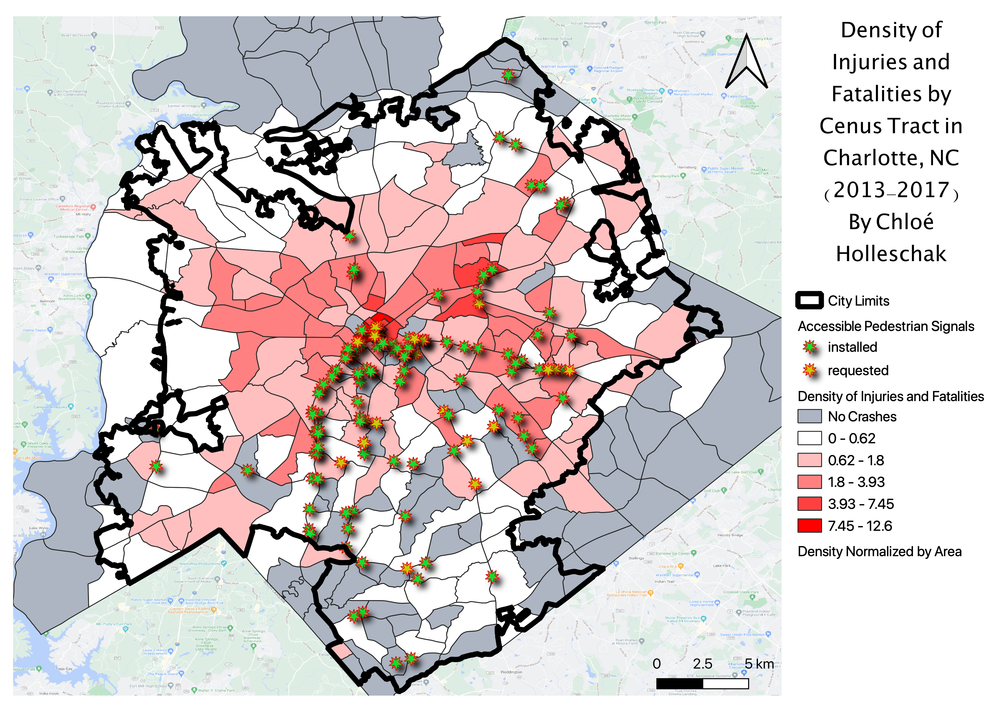

Welcome to Midterm 2
Below is a PNG of Midterm 2, as well as the required data!
Changes I made to the map:
I added stars to the map in order to emphasize the locations of the pedestrian signals.

GEOJSON file of Mecklenburg Crash Density Choropleth
GCP points
GEOJSON file of Signal points
GCP